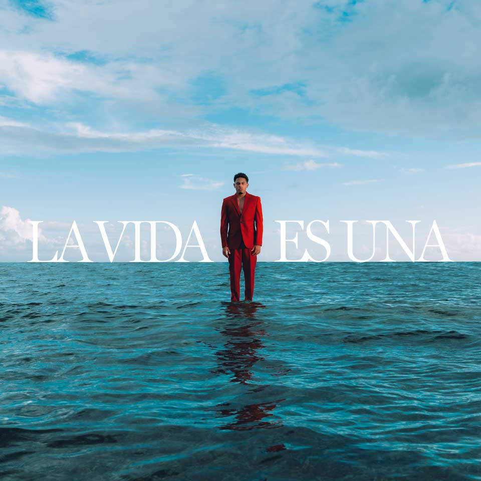

| Inicio | Discografía | Registrarse |
|---|
|  |
La vida es una es el tercer álbum de estudio del rapero y cantante puertorriqueño Myke Towers. Fue publicado el 23 de marzo de 2023 a través de Warner Music Latina. Con 23 canciones, hay colaboraciones de Arcángel, J Balvin, Chita, Ozuna y Daddy Yankee. |
| Nombre de canción | Producir canción | |
| 1 | Voodoo | |
| 2 | Mi Droga | |
| 3 | Más Allá | |
| 4 | ULALA (OOH LA LA) | |
| 5 | No Salgo | |
| 6 | Conocerte | |
| 7 | Mundo Cruel | |
| 8 | Cama King (feat.Chita) | |
| 9 | Sábado | |
| 10 | Cenizas Quedan | |
| 11 | Lo Que Pide | |
| 12 | Extra Extra | |
| 13 | Tu Rehén | |
| 14 | Bella Kyal | |
| 15 | Celos | |
| 16 | Aguardiente | |
| 17 | El Calentón | |
| 18 | Don & Tego | |
| 19 | En Alta | |
| 20 | Flow Jamaican | |
| 21 | Equix | |
| 22 | LALA | |
| 23 | Lo Logré |